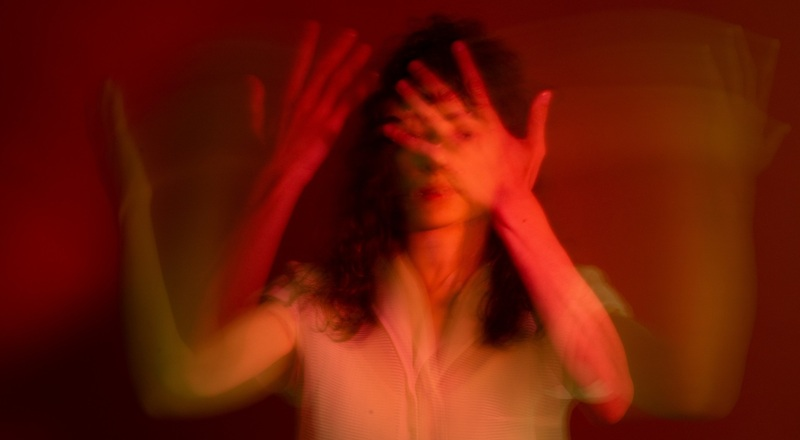

photography
"როცა სიზმარს ვხედავდი..." -
ინტერვიუ ფოტოგრაფ დარო სულაკაურთან
პანდემიის დროს გადაღებული ეს ნამუშევრები თავდაპირველად ჯერ უწყვეტი ფორმით
დაროს პირად ვებგვერდზე განთავსდა, შემდეგ მარჯანიშვილის 7-ში მდებარე თიბისი
კონცეპტის საგამოფენო სივრცეში გადაინაცვლა და ხელნაკეთი წიგნის ფორმაც მიიღო,
რომელიც საბოლოოდ 11-მეტრიან ექსპოზიციად ტრანსფორმირდა.
09-06-21